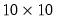

Y is now a 3 element vector because it has the same dimension and values as
X. EViews automatically resizes the
Z Matrix to conform to the dimensions of
X so that
Z is now a matrix containing the contents of
X:
Z(1,1)=1,
Z(2,1)=2,
Z(3,1)=3.
W is declared as a  matrix of 4’s, but it is then reset to be a matrix of 2’s.
X is a matrix of 100’s.
Y will be a rowvector of length 3, containing the original contents of
Z, and
Z will be a column vector of length 20 containing the contents of
BETA.
will result in an error. EViews cannot change Y from a vector to a matrix and there is no way to assign directly the 4 elements of the matrix X to the vector Y. Other examples of invalid assignment statements involve assigning matrix objects to scalars or sym objects to vector objects.
It may be possible, however, to use the @vec,
@vech,
@unvec, and
@unvech functions to reshape matrices and vectors into forms that permit assignment.
For cases where args are numeric (integers, scalars, vectors), the
arg values act as row or column indices. Focusing on column functions, for example,
For cases where args are strings (string literal, string object, svector), the
arg values are examined to find matches in the corresponding row or column labels . For example, the commands
You may mix the types of arg1 and
arg2 in data member functions that take two arguments so that, for example,
Combining matrix utility functions (“Initialize Using Creation Functions”) with the matrix extraction data members offers flexible methods for obtaining data from matrices.
Since the args in the member data extraction functions may themselves be expressions, we may combine the two lines into a single expression:
The matplace command places
M2 in
M1 beginning at row 1 and column 3.
V1 is placed in column 3 of
M1, while
V2 is placed in row 80 of
M1.
You may combine matplace with
@fill and the
@row,
@col,
@droprow, or
@dropcol data members to perform complex subsetting and filling
These statements create the vector XVEC and the two column matrix
XMAT containing the non-missing series and group data from 1963M03 to 1993M06. Note that if
GMPYQ has a missing value in 1970M01, and
HSF contains a missing value in 1980M01, both observations for both series will be excluded from
XMAT.
When performing matrix assignment, you may refer to an element of a series, just as you would refer to an element of a vector, by placing an index value in parentheses after the name. An index value i refers to the
i-th element of the series from the beginning of the workfile
range, not the current sample. For example, if the range of the current annual workfile is 1961 to 1980, the expression
GNP(6) refers to the 1966 value of
GNP. These series element expressions may be used in assigning specific series values to matrix elements, or to assign matrix values to a specific series element. For example:
assigns the fourth value of the series YSER to
X(1,1), and assigns to the fifth and sixth values of
YSER, the
X(2,3) value and the scalar value “4000.2”, respectively.
The @convert function takes a series or group object and, optionally, a sample object, and returns a vector or rectangular matrix. If no sample is provided,
@convert will use the workfile sample. The sample determines which series elements are included in the matrix. Example:
X is a matrix with the first column containing data from
INV, the second column from
GDP, and the third column from
M1.
As with direct assignment, @convert excludes observations for which the series or any of the series in the group contain missing data. If, in the example above,
INV contains missing observations in 1970 and 1980,
V would be a 29 element vector while
X would be a matrix. This will cause errors in subsequent operations that require
V and
X to have a common row dimension.
There are two primary advantages of using @convert over direct assignment. First, since
@convert is a function, it may be used in the middle of a matrix expression. Second, an optional second argument allows you to specify a sample to be used in conversion. For example:
stom (
Series
TO Matrix) takes a series or group object and copies its data to a vector or matrix using either the current workfile sample, or the optionally specified sample. As with direct assignment, the
stom command excludes observations for which the series or any of the series in the group contain missing data.
While the operation of stom is similar to
@convert,
stom is a command and cannot be included in a matrix expression. Furthermore, unlike
@convert, the destination matrix or vector must already exist
and have the proper dimension.
stomna (
Series
TO Matrix with
NAs) works identically to
stom, but does not exclude observations for which there are missing values. The elements of the series for the relevant sample will map directly into the target vector or matrix. Thus,
will always create a 50 element vector GVECTOR that contains the values of
GDP from 1951 to 2000, including observations with NAs.
mtos (
Matrix
TO Series) takes a matrix or vector and copies its data into an existing series or group, using the current workfile sample or a sample that you provide.
As with stom the destination dimension given by the sample must match that of the source vector or matrix.


matrix. Then the assignment statement:
will result in an error. EViews cannot change Y from a vector to a matrix and there is no way to assign directly the 4 elements of the matrix X to the vector Y. Other examples of invalid assignment statements involve assigning matrix objects to scalars or sym objects to vector objects.It may be possible, however, to use the @vec, @vech, @unvec, and @unvech functions to reshape matrices and vectors into forms that permit assignment.